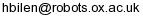

Dr. Hakan Bilen

IEB 30.6
Dept. of Engineering Science
University of Oxford
Parks Road
Oxford OX1 3PJ
United Kingdom
NEWS / ACTIVITY
- June 2017. My new homepage is finally up.
- December 2016. Coorganizing Brave new ideas for motion representations in videos workshop in CVPR’17.
ABOUT
I am a postdoctoral research assistant in the Visual Geometry Group (VGG) at the University of Oxford, working with Andrea Vedaldi. My research focuses on computer vision and machine learning.
Before joining VGG, I completed my PhD in VISICS group in KU Leuven under the supervision of Luc Van Gool and worked with Tinne Tuytelaars as a postdoctoral scholar in the same group for a year. My research was about image classification with latent parameters with a focus on weakly supervised object detection and action recognition.
I received my bachelor’s and master’s degrees from the mechatronics programme of Sabanci University where I was working on micro-robotics with Mustafa Unel.
RESEARCH INTERESTS
Weakly supervised learning, multi-task learning, unsupervised learning.